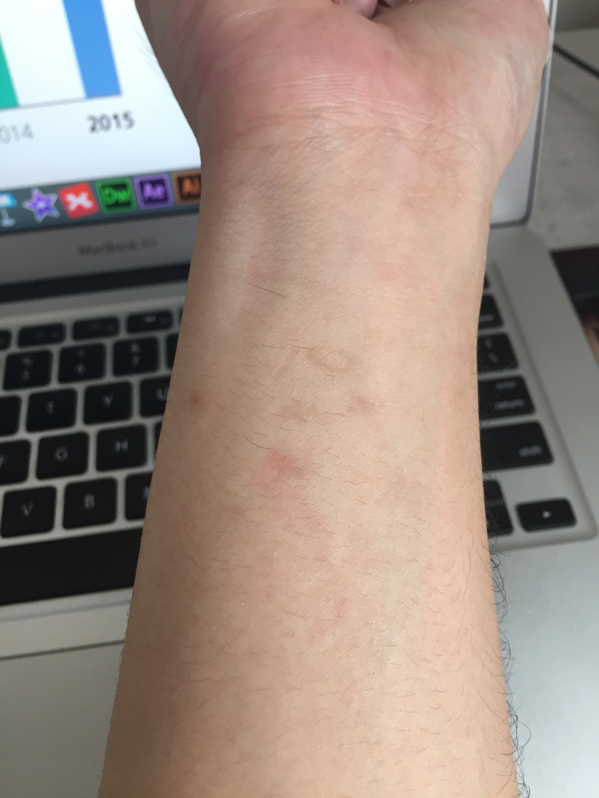

小时候
我最早的记忆，家里东屋的房子是泥土垒出来的，用作厨房，厨房不大，大概也就6个平方左右，厨房里有灶台有案板，如果再有几个人，本就不大的屋子就会显得格外拥挤。那时候我特别爱腻在妈妈身后，她做饭我就在旁边，特别是晚上的时候，因为没有通电，只能点蜡烛或者煤油灯，我就坐在小板凳上或半躺在柴火堆上看着火光出神，也不知道想到啥了反正就是很享受那个状态。印象非常深的有一次，其实全家都吃过饭了，妈妈在刷锅，我不知道咋回事跑到厨房，看到一个舀子里盛着东西，端起来就喝，喝了几口觉得味道不对劲，这时候 忘了是我妈还是我姐赶紧跑过来笑骂我，说舀子里的是刷锅水，不是什么汤，哈哈，我说味道咋不对劲哩。
小时候身体不好，感冒发烧少不得要打针吃药，但我从小就不爱吃药，开始还是把药碾碎了用汤勺喂服，后来不碾碎直接口服，药物拉着嗓子咽下去的感觉让我对喝药非常排斥，我宁愿打针也不愿喝药。但是我在很早时候连打针都不愿意，每次听到我小叔晃动药水的声音，我就吓得不要不要的，还记得我小叔给我打针，我从这个病床跑到另外一个病床，满屋子乱窜，都抓不到我，嘿嘿，我爸说我更早的时候住院也不“老实”，敢站在这个病床往另外一个病床尿尿，而且很得意，可把我爸气坏了，哈哈。后来也不知道怎么地，慢慢也接受了打针甚至一到感冒发烧我自己就主动要求打针不要吃药，以至于现在我的手腕处和屁股上都留了一些记号，每次抬手或洗澡都能想到小时候打针的情况。

也许就是因为身体不好，所以跟着爸妈去过“很远”的地方，应该是“烧香拜佛”去了吧，因为记忆太模糊，只记得我去过一个寺庙，我沿着寺庙的院墙根的台阶走，旁边跟着几个大人，还去了一个非常非常高的地方，我站在那个最高处往下看，全是台阶，身后是类似电视剧里“南天门”一类的建筑，这个印象太深刻以至于现在想起都觉得是在做梦，但应该不是梦。出了那个寺庙到街道上，我还看到了一个人吃馒头非要把馒头的皮揭掉扔了再吃，当时年幼的我真是非常非常惊讶，热腾腾的馒头为什么要揭掉皮再吃啊，太浪费了！！后来我爸爸说我那是去了两个地方，一个是淮阳伏羲陵一个是商丘火神台，我记忆中的高高的台阶是在商丘火神台，看到的那个吃馒头要揭掉皮吃的是在淮阳伏羲陵，我爸说我在伏羲陵太不老实了，属于撒手没，一个不注意就看不到人了，看见别人的摩托车就走不动，非要坐人家的摩托车，还老是去抠弥勒佛的肚脐眼……
还有一件记忆很模糊的事，隐约记得跟着爸爸去过砖窑厂，感觉那个砖窑厂离家还挺近的，在砖窑厂我爸给我烤馒头吃，用树枝插上馒头烤，焦黄焦黄的也很脆，可好吃，我还在窑厂上下跑着玩。印象中砖窑厂应该在我大姑家地的旁边吧，还有印象我家种过我大姑家的那块地，栽种过西瓜，我还在地里看过西瓜，怕鸟啄和被人偷，一看就是一上午或一下午，盼望着家里送饭过来或者替班？
在家里会听到不远的“南地官路”上车呼啸的声音，特别是晚上，那声音特别响，有时还会响起几声喇叭声，那个时候不懂，就站在院墙边听，也不是很清楚到底是什么声音，有一种说不出来的感觉，是世界很大么？还是什么？用文字不好形容……
后来通了电，有的人家里也有了电视，我爸就背着我去别人家看电视，我完全想不起是什么电视剧，只记得我趴在我爸的背上很舒服，走着走着我就会在背上睡着……我爸会给我做“弓箭”，是一根小棍做成弓架，用根小绳做的弓弦，把干的高粱秸秆做成一小截当成箭，那其实就是小玩具啊，可我玩的可开心，天天射着玩，对着太阳射，对着墙射，对着树射，再屁颠屁颠的跑去把射过去的“箭”捡回来继续，那个时候可意气风发了，就像一个“英雄”，满脸骄傲。
有一次看电视我看到了我二大爷在电视里面（好像是做广告推广药的），我震惊极了，我想这人怎么能钻到电视里面去呢？？！我围绕电视机来回的“研究”，可还是不知道咋能钻进去，我问我妈，她告诉我，是人拿着摄像机拍进去的，我更加震惊了，人怎么能被摄像机吸进去，那人还能出来吗？？从那之后很长一段时间，我都对电视里边的人和一切感到可惜，他们都被摄像机吸进去了，再也出不来了……
小时候的冬天非常寒冷，雪下的很勤也很大，经常会听到风吹过树发出的“吱吱”的声音，那是树上结的冰琉璃的声音。厨房里也是各种结冰，桶里的水还好点，毕竟桶比较深，只能结上面一层的冰，下面还是水，可锅碗瓢盆就不行，经常结冰冻成一块，妈妈会把冰块敲掉扔到院子里，我就会拿起一块冰，用根从柴火堆里找来的麦秸秆对着冰吹气，吹透了后可有成就感了，还专门拿一根绳子穿过去系起来到处炫耀……
后来家里养了牛，在厨房的北面也就是东卧的东侧那一小块当做牛棚。印象中黄牛好大，眼睛也好大，牛长虱子，那虱子真是太大了，用指甲盖碾，一碾就爆，那感觉真是好爽快。牛会吃半干不湿的玉米秸秆，那时候家里有把铡刀，把秸秆用铡刀铡成丁放进牛嘈里，牛就会吃，那时候还很好奇，怎么能吃的下去啊。后来也忘了啥时候不养牛了，那把铡刀还一直留着，现在也不在了，可能卖了吧。后来家里开始养猪，在与厨房对着的西边垒了两个猪圈，猪除了吃和睡就爱拱猪圈了，也不清楚那肉鼻子咋就不怕疼。
那时会经常有下乡的拍摄照片的人拍摄全家福，因为我非常喜欢警察，拍个全家福都要戴个警察帽子，后来一年夏天我二姐给我买了一身警察的夏装，给我高兴的几天睡不着觉，过年的时候我妈也给我买了一身警察的衣服还买了一双皮鞋，给我乐的呦，说实话那时候对警察这一职业内心充满了狂热，这种狂热随着年龄的增长一直到高三结束，就再也没有了，现在提起警察毫无兴趣，不明白是怎么回事……
记忆中，那时候爸爸妈妈在不同时段卖过糖葫芦和鸡头，批发的山楂和冷冻鸡头在家里做，不过记忆太模糊了。记忆比较清楚的是卖凉皮，每天天不亮爸妈就起来准备凉皮，早早的就出去了，有时候我也会跟着去，印象很深的有一次妈妈骑着“ong车子”（车身在前的三轮车）带着我到一个马路边摆摊，妈妈在那个地方照顾生意，我就坐在一旁玩，困了就铺个凉席躺在地上睡会，也不知是口渴了还是怎么我妈带着我到路旁边的一个院子里，在那说了啥干了啥我都忘了， 就记着我当时的感觉，那个感觉很奇妙，觉得世界很大，有无限希望的感觉，人生中有过两次这种感觉，第二次是上大学，刚到学校那几天，不过现在全部烟云散了，再也没有这种奇妙的感觉了。
我记得我很小的时候是不怕鬼的，黑灯瞎火也不怕，但是因为一件事情，“鬼”这个名词人生中第一次走进我生命中，大概是五六岁的时候，我大姐二姐晚上去干啥去了我倒是忘了，但是记得她俩非常慌张的跑回了家，门被带的非常响，回家就反锁了门，她俩跑回屋坐到沙发上给我们讲，说她俩可能碰见“鬼”了，是在桥边上发现的，我一开始是没感觉的，但是我看着她俩很惊慌，我慢慢的也有感觉了，她俩讲着讲着我也变得非常恐慌，就躲在我爸腿边上，就露个头听她俩讲，着实给吓着了，第二天我跟着我妈还跑到桥边给她俩“叫魂”，才知道那个“鬼”其实是个醉鬼，去走亲戚喝醉了回家时摔到桥下边去了，摔得一脸血，她俩估计听到声音用手电一照看到了一脸血……在这次之前我只怕一个人，那个人是婚丧嫁娶的“铁炮”手，他专门打铁炮的，我就怕他，只要在婚丧酒席上看见他就躲着他，他长得也可怕，打得炮又非常响，有时候大家开始吃了，他就点火放炮，毫无征兆的就会被吓一跳，而且经常性的好几响，在那时候我的观念里他绝对是不能惹的～
在90年代初，我们那经常会公审后枪毙犯人，枪毙犯人的地方离我家还很近，是在一座桥下，那次是跟着家人一起去的，不过我只记得人山人海和警笛声，连啥时候枪毙的我都不知道，准确的说是我啥都没看见，在回家的路上我就趴我妈的背上听他们讲是怎么回事。还是那个桥，桥边上的河在那个时候可是有非常多的鱼的，我记得我爸我大姐还有我在那个河边上用“馍筐”都能网到一筐子鱼，鱼非常多，不过到我高中时，那条河变臭了，现在连那河都没了，因为修路给推平了～
记忆中小时候有“一大半”的时间都是在我姥姥家度过的，每次都能住好多天。但有一次去姥姥家，忘了是怎么回事，可能是我自己逞强，自己一个人“先行带路”先去了，而我选择的这条路两侧有很长一段路是庄稼地，我刚刚走出最后一户人家，就看到了右手边前方有好几个坟包，坟包前面还有高高的碑刻，那时候是下午，但前后却都没有人经过，我壮着胆子往前走，但走着走着我却再也不敢往前走了，眼睛余光似乎看到有“人”在坟包旁边站着一动不动看向我，内心顿觉恐惧异常，想要逃跑，但腿好像很麻很沉心脏也好像被什么东西打了一棒子，而且我也不敢跑，生怕“惊动”了碑刻边上的“人”，就一步一回头小心翼翼的往回路退，可是我实在是害怕，最后连动都不敢动，再也不敢回头看，可越是不敢看我越是害怕那里的“人”在看我甚至跟过来，内心恐惧之极，连哭也不敢大声哭，自己捂着嘴蹲在地上哭，哪里都不敢看脑子里一片空白，就那样也不知道过了多长时间，终于有一位路人经过，我鼓起勇气站起身来，撒腿就往家里跑。这段记忆尤为深刻，我跟谁都没有提过，至今为止我都不清楚我那次究竟是不是看到了什么，但是那种害怕恐惧的感觉却是真实的，搞得我现在都对那种黑色的瘦长瘦长的东西还有些阴影， 总觉得有什么东西在它旁边站着……在姥姥家的日子很快乐，还记得姥姥家院子里的梧桐树，我妗子和妈妈大姨小姨姥姥在厨房做饭，我和表弟们玩耍，冬天时出去买炮竹放炮，夏天时去河边洗澡，晚上太热我们就一起睡大场里，把地扫干净，铺上塑料布被褥，大人扇着蒲扇，我们则躺上去听着大人聊天，看着满天星星，一会就睡着。说起来很有意思，我第一次要留在我姥姥家时我是非常不乐意的……具体的我记不太清了，也许是我白天答应了我妈留在姥姥家几天，但没想到真的到晚上了我却变卦了，后来我听我妈说我姥姥给她学的，说我天一黑，我就坐在东屋的单人沙发上不说话了，也不哭，也不看人，就是闷声不吭，我姥就觉得不对劲，就问我咋回事，不问还好，一问直接就哭了，说我想回家，那时候天已经黑了还是冬天，可是我越说越激动，但也不大声，感觉就跟受了多大委屈似的的，我舅我妗我表姐表弟我姐都劝不动我，我姥实在没办法，就和另外一个姨姥一起送我回了家，这个我记得，那天晚上月亮很亮，树影非常清晰，我们是走回我家的，到家了我反而不好意思了，一头钻进被窝不露头了，哈哈
后来家里也不卖凉皮了，而我也开始上学了，上的是学前班，去上学前需要通过一项考试——⟶背数字，但那时候我就是背不会，还记得在头一年我小姐入学考试前在家里用玉米串成的“籽”背数时我还捣乱来着，哈哈。那时怎么都记不住，背到2忘了3，背到3忘了4，也没啥办法只能死记，那时正好家里刚买电视，用电视包装下面的泡沫画上成条的杠杠，就那样死记，等到了入学考试那天，我 二姐带着我去的，“老校长”当考官，他一开始让背，我就一口气从1数到了22，“老校长”连忙阻止并给我通过了，其实我和我姐都知道，我22后面的数字压根不会数了，因为在家里就是这样……
去学前班上学，需要自己带着小凳子和“沙发垫子”，小凳子用来当课桌，沙发垫子其实就是填充了麦秸秆的化肥袋子。我的书包里本子是最多的，我在一个本子上只要写上了字，肯定就不用了，必须用另外一个全新的本子，以至于到后来我一个书包里全是写了几个字的和还没用三分之一的本子，现在想想，真是太浪费了。开学第一天马老师问我们，你们长大后的梦想是什么，小伙伴们回答什么的都有，有回答科学家的有回答老师的有回答造汽车的，我毫无疑问回答的是长大要当警察，老师说你们真是聪明的好孩子，长大以后要记住现在的话哦，诶，我记住倒是记住了，可我也对警察不着迷了，我也觉得奇怪。有一次在学前班时和另外一个小伙伴志力跟着二姐去她们班里玩，忘了具体是啥情况，反正结果一不小心上课了，只能躲在她们课桌下面，我在我姐桌子下面，志力躲在她姐桌子下面，我俩还能相互看见，还能玩琉璃珠子呢，哈哈。其实那节课的老师就是我日后五年级时的老师。
在学前班时跟着我二姐去过她同学家，后来每次路过那家就觉得认识她们一样，有一次忘了是放学了还是没到上课时间，很多同学包括我去那一家去看电视，那部电视剧是《白眉大侠》，我人生中就看过那一次白眉大侠，时至今日再也没有看过……
还是在学前班那时，我把学校说成“学ya”，别人问你学校怎样怎样，我回答道“俺学ya怎么怎么……”，一般这时别人就会笑，我就会气鼓鼓的说我哪里说错了，就是“学ya”啊，哈哈……我人生中数学第一次开窍也是在学前班，一次考试时，苍天作证，真是突然间啥都会了，我还记得那时候的感觉，非常惊讶，几加几几减几，几分成几和几，瞬间啥都会了，没出意外，那次考了100分，从那以后，数学就很好了，至今还觉着很是惊奇……也是那个时候家里也养了羊，放学或放假经常会去放羊，晚上羊没得吃，妈妈会去河边沟边去割草回家喂羊，用“箩子”装的满满的，“很沉”，我也会跟在后边像模像样的割草，大多是玩耍吧。
学前班和一年级时经常有马戏团过来表演马戏，每年的春季会有庙会，会有唱大戏的到学校旁边，马戏团也会跟着过来表演，学前班和一年级时还经常能够看到马戏团，可不知道为什么后来就再也没见过马戏团过来表演了。至今为止我也就在那时候看过一次马戏表演，马戏表演门票每个人5毛钱，我自己没钱，也没“奢望”过能够看一场，当我姐过来说带我一起去看时，我是很惊喜的，那次是在学校操场上搭建的大棚，人非常多，不记得是跟谁一起看的了，排着队进去的，还记得空中表演和骑马表演，最厉害的是杂技人员的吞鸡蛋表演，把鸡蛋吞到肚子里还能从喉咙看到形状慢慢下去，吞下去后说了很多话张开嘴向我们证明确实是吞下去了，然后再从肚子里吐出来，还是能够从喉咙看出一点一点的往上，一下能够吐出好几个，不光当时比较震惊到现在还是很佩服。还有一个表演也很神奇，大变活人，一个人全身被绳子拴着站在箱子外边，另一个人也被拴着蹲在箱子里边，箱子用一把锁给锁上，最外边用一个大袋子把他们包起来，可以做到瞬间更换位置，里面的跑到外面，外面的跑到里面，至今还不得其解，厉害了。
……待续……